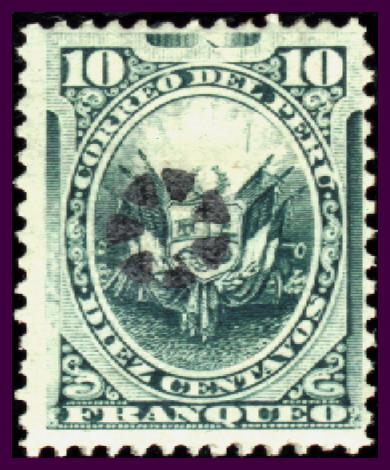
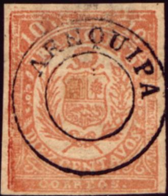
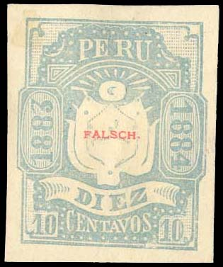
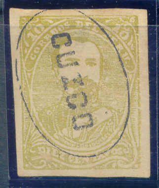
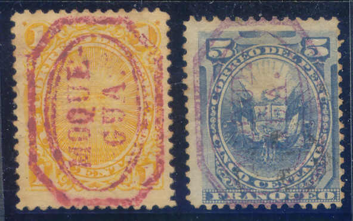

{kind=link}


Return To Catalogue - Peru, local stamps, part 2 - Peru - Fiscal stamps
Note: on my website many of the
pictures can not be seen! They are of course present in the
catalogue;
contact me if you want to purchase the catalogue.
In 1884-85 many provisional overprints were used.
Overprints exist for Alerta, Ancachs, Apurimao, Arequipa,
Ayacucho, Chachapoyas, Chala, Chiclayo, Cuzco, Huacho, Moquegua,
Paita, Pasco, Pisco, Piura, Puno and Yca. I have not yet been
able to catalogue this section fully.
Be careful, many bogus issues exist! The book "Peru Postal
Cancellations 1857-1873" by Georges Lamy and Jacques-Andre
Rinck (1964) says the Steiger gang made many forgeries of these
stamps. They used genuine stamps and overprint material and in
some cases also genuine cancels. They were then sold as reprints.
Stamps of Peru overprinted with dots (2 types)

(reduced sizes)
5 c blue 10 c green 10 c black (only type 2)
There exist also stamps for Ancachs with overprint "FRANCA" without frame (5 c blue) and a large "FRANCA" in a diamond extending over two stamps (1 c orange, 2 c violet, 5 c blue, 10 c green and 20 c red).

"FRANCA" without frame on 5 c blue
"FRANCA" in a diamond, extending over two stamps,
reduced sizes
A fiscal stamp was overprinted in 1884 with "CORREO FISCAL" and "FRANCA" (two types):

Basic fiscal stamp 10 c yellow
Reduced sizes
1881 Imperforated, fiscal stamps overprinted "PROVISIONAL 1881-1882", "AREQUIPA" in circle, and/or overprints "1883".


10 c blue 25 c red With red "AREQUIPA" in circle surcharge (red or black)

Reduced sizes
10 c blue With additional large "1883" overprint

10 c blue 25 c red Some sources state that the "1883" is bogus, others say it was for fiscal use.
I have seen a whole sheet of the "1881-1882" overprint on 25 c (10x5 stamps); it seems like the overprint was done manually, there are even some double overprints.
Whole sheets of 25 c stamps
Reprints of the 25 c exist, without overprint.
1883 Inscription "FRANQUEO" and arms


10 c red 10 c red (with blue "AREQUIPA" in circle overprint)

Black "AREQUIPA" overprint
I've seen this stamp with black "AREQUIPA" in a circle, this overprint is probably bogus.
1885 Arms and persons


(Reduced sizes)
5 c olive 5 c blue (head) 10 c grey 10 c olive (head)
These stamps were only valid with a circular overprint "AREQUIPA".
Some fiscal stamps were used for a few days as postage stamps (10 c blue, 25 c violet and 1 S brown, all with inscription "1883-1884"), examples (the last stamp is used postally):

(Reduced size)

Two 10 c stamps with an unlisted "HABILITADO AREQUIPA"
overprint in a triangle.
A Senf forgery of the 10 c, with red "FALSCH" (=forged in German) overprint:

(Senf forgery)
This forgery is also described in Album Weeds. This forgery looks much better than the genuine stamp.
In The Canadian Philatelic Weekly January 11,
1894, page 10 the following text can be found concerning
forgeries of the 1885 issue of Peru; I presume the above stamps
are intended
"We desire to warn our readers against a firm called C.
B. Madueno Marquez & Co., of Arequipa, Peru, whose
advertisements are appearing in many of our contemporaries. This
firm are offering rank forgeries of the 1885 issue of Peru, both
cancelled and uncancelled. The forgeries are poorly executed and
are not apt to deceive many. We received a consignment of this
trash, which was of course guaranteed genuine. We have also been
shown some sheets of this firm in which these forgeries were
mixed up with current issues of Peru, Chili, and other South
American countries."
1885 Stamps of Peru, overprinted 'AREQUIPA' in a double circle in red, violet or black.
1 c yellow 2 c violet 5 c blue 10 c black 20 c red 50 c green 1 S red
This overprint also exist on postage due stamps.
A 10 c blue stamp of Arequipa exists with overprint "CORREO DE AYACUCHO" in black. Also a stamp of Peru (5 c blue) and a stamp of Arequipa (10 c blue) with overprint "* AYACHUCHO * PRAL" in a large circle. Sorry, no pictures available yet.
Two stamps of Peru (5 c blue and 10 c black) were overprinted with a circle with "CHALA" in the upper part (part of a cancel, with date removed?).

Chala overprints
Stamp of Peru (5 c blue) with "FRANCA" overprint or "FRANCA" in an ellipse.

Chiclayo 'FRANCO' in an ellipse overprint
In 1881, the 5 c blue and 10 c red of Arequipa (the 5 c with or without additional "AREQUIPA" in a circle overprint) were overprinted with "CUZCO" in a circle.


Stamps of Arequipa with "CUZCO" overprint

5 c blue of Arequipa with red "AREQUIPA" in a circle
and "CUZCO" in an ellipse overprints

Non-issued 10 c green of Arequipa with "CUZCO"
overprint in an ellipse?
In 1881 also some stamps of Arequipa were overprinted with an ellipse shaped design with "18o DISTRITO." in the center. The values 10 c blue (with additional "AREQUIPA" overprint in a circle) and 10 c red exist. Two stamps of Peru (5 c blue and 10 c black) were also overprinted in this way in 1884.

llipse shaped design with "18o DISTRITO." in the center
overprint on stamps of Arequipa

As above, 10 c with additional "CUZCO" in an ellipse
overprint? Unlisted variety?
Another overprint exist with "CUZCO" surrounded by dots; it exists on the 5 c olive, 10 c blue (with or without "AREQUIPA" in a circle overprint) and 10 c grey. Four stamps of Peru (1 c orange, 2 c violet, 5 c blue and 10 c green) were also overprinted in this way in 1884. Sorry, no pictures available yet.
In 1885 again a new overprint appeared on postage due stamps of Peru (1 c brown and 10 c orange) of a large ellipse with "FRANCO. CUZCO." printed in it. I've only seen it with handwritten value(?) in the center:

Some stamps of Peru (5 c blue and 10 c green) exist with a large 'T' in a double circle overprint.

Black overprint
violet overprint
Some similar overprints, but with a single circle with a large 'T' inside also exist(?).
Stamps of Peru overprinted "MOQUE GUA" in red (1 c orange, 1 c green, 2 c violet, 5 c blue and 10 c black) or violet (5 c blue only). It also exists on the 10 c blue, 10 c red (with or without blue "AREQUIPA" overprint in a circle) and 10 c grey of Arequipa in black.
(Reduced size)

1 c orange and 5 c blue of Peru with this overprint

On 10 c red of Arequipa with additional blue "AREQUIPA"
overprint in a circle
Some stamps of Peru were overprinted with "MOQUEH" surrounded by dots (5 c blue and 10 c grey), a local stamp of Arequipa (10 c grey) also received this overprint:
(Stamp of Arequipa, overprinted "MOQUEH" surrounded by
dots)

10 c grey with "MOQUEH" surrounded by dots overprint
For Peru, local stamps, part 2, click here.
{kind=link}
{kind=link}
{kind=link}
{kind=link}